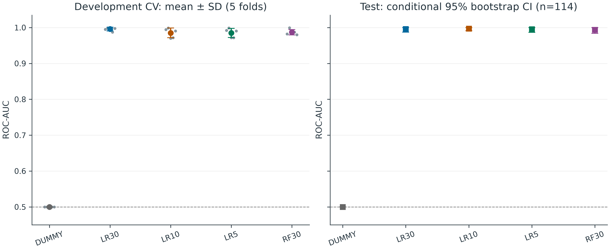
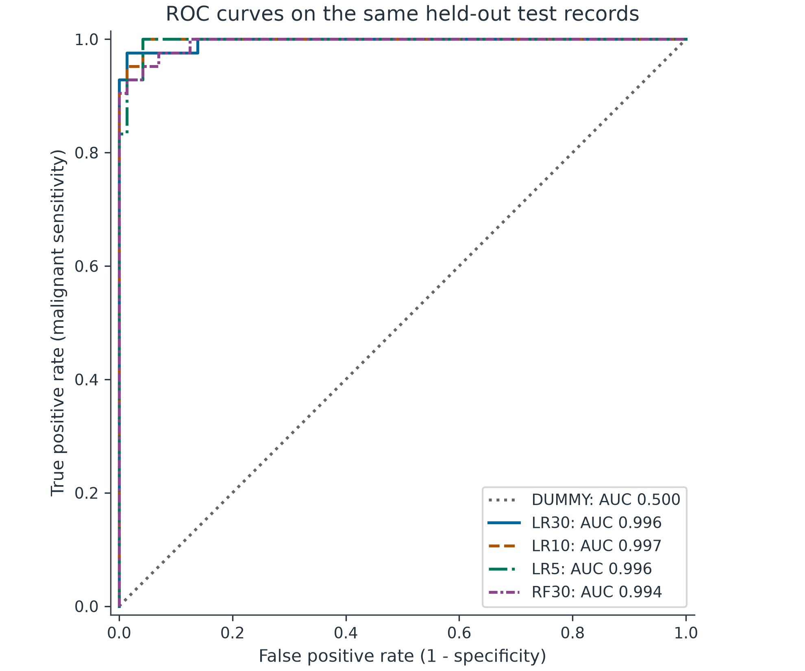
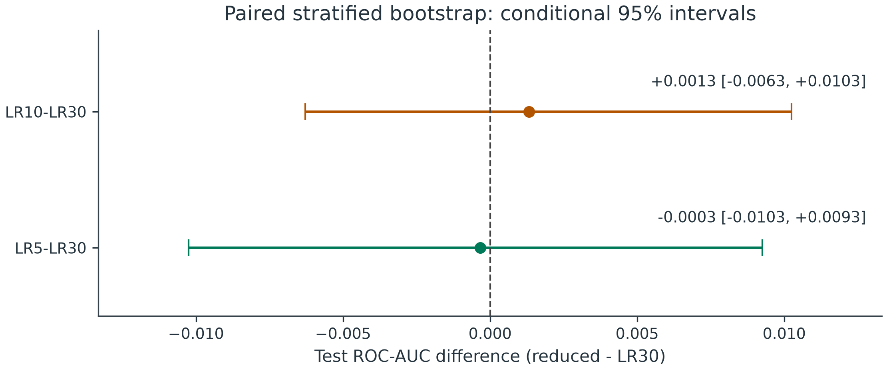
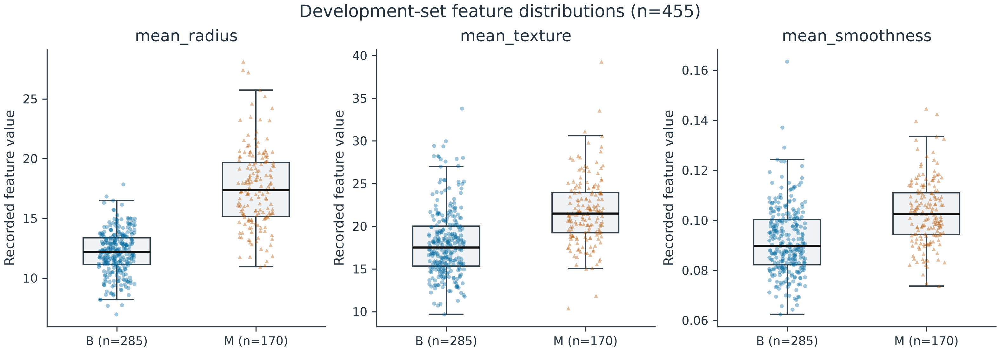
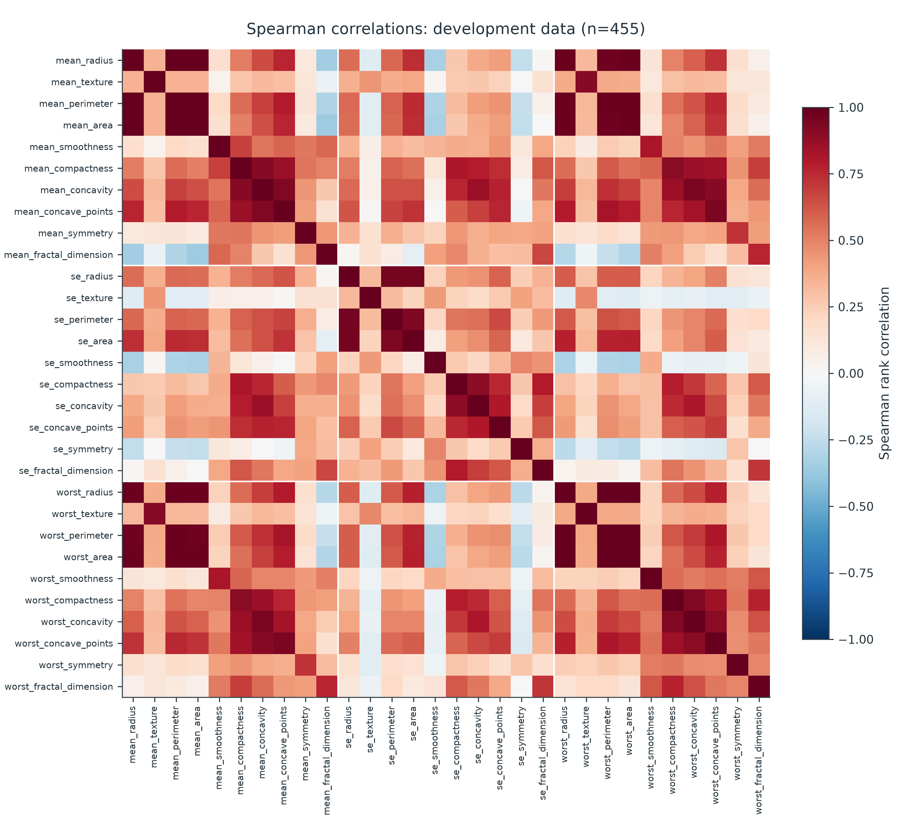
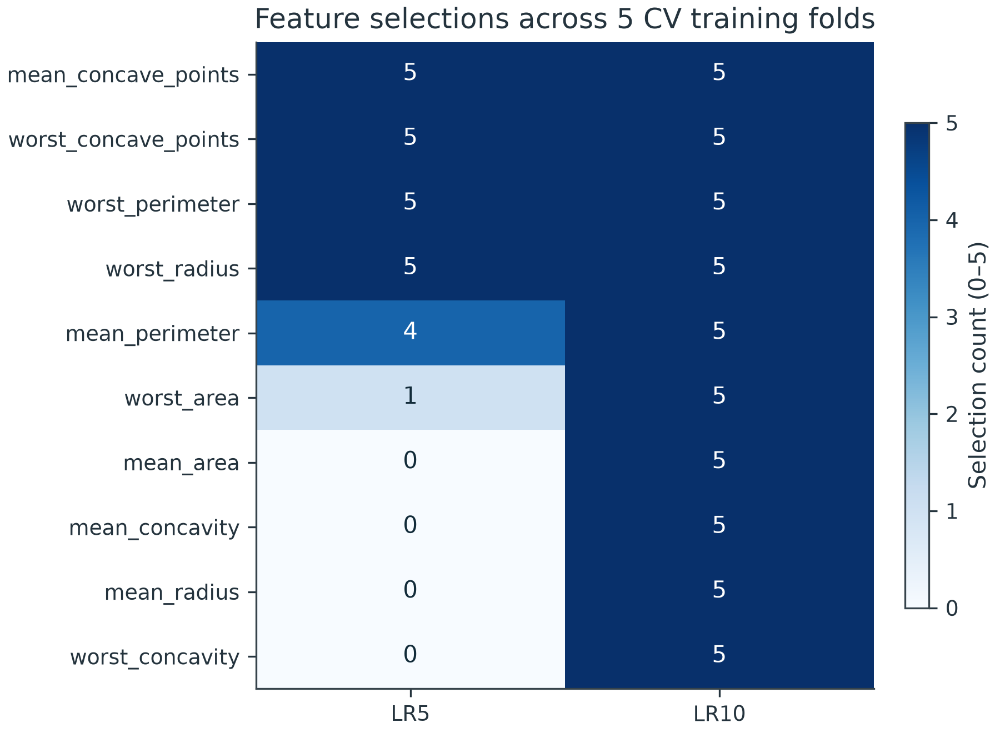
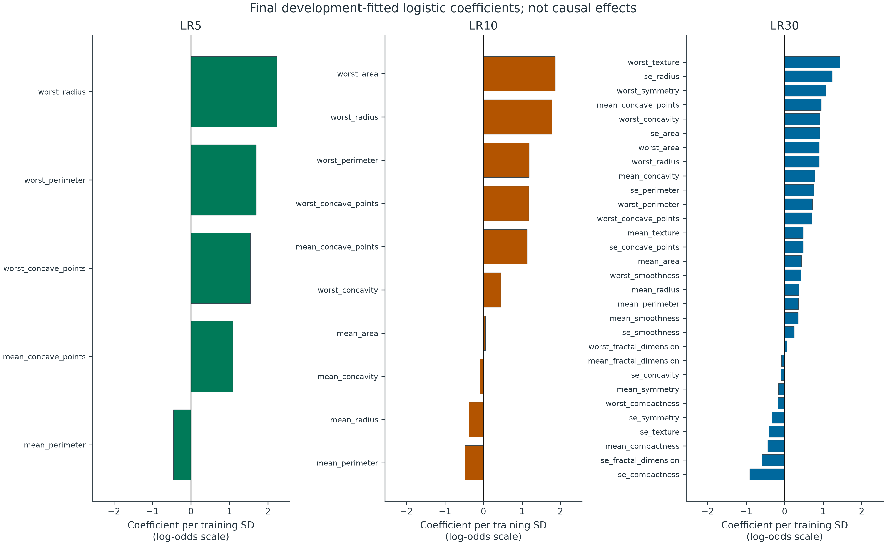

模型简化 ≠ 检查减量
30 个特征来自同类细针穿刺图像。减少模型输入不代表减少检查次数、降低诊疗成本或证明临床安全。
比较 5、10、30 个细胞核特征下的乳腺肿块良恶性分类表现。保持数据划分、筛选方法和逻辑回归设置一致，观察模型简化带来的变化。
研究范围：已有细针穿刺图像特征的二分类分析。减少输入变量不等于减少临床检查，也不证明诊断安全性。
切换模型，查看同一独立测试集上的表现、最终特征名单与错误计数。切换只改变展示，不重新训练或挑选测试结果。
恶性 M=1 · 分类阈值固定为 0.5 · 测试集 114 条
当前展示 LR30：30 个特征。开发集 CV AUC 0.996 ± 0.005。
| 真实 / 预测 | 预测良性 | 预测恶性 |
|---|---|---|
| 真实良性 | 71TN · 正确排除 | 1FP · 误报 |
| 真实恶性 | 3FN · 漏判 | 39TP · 正确识别 |
测试集包含良性 72 条、恶性 42 条。四格计数之和始终为 114。
mean：均值；se：标准误；worst：三个最大值的均值。worst 并非病情等级。名单不来自测试集筛选。
默认展示规则在测试前确定：在三个逻辑回归方案中，按开发集交叉验证平均 AUC 选择，同分优先较少特征。本次记录的默认模型为 LR30；模型切换不改变该规则。
DUMMY 为只学习类别比例的基线；LR30 是主要参照；LR10、LR5 为减量方案；RF30 为非线性参照。所有模型共用数据划分和验证折。
| 模型 | 特征数 | 开发 CV AUC · 均值±SD | 测试 AUC | 测试 AUC · 95% CI | 灵敏度 | 特异度 | 精确率 | F1 | 准确率 | FN / FP |
|---|---|---|---|---|---|---|---|---|---|---|
| DUMMY | 0 | 0.500 ± 0.000 | 0.500 | [0.500, 0.500] | 0.000 | 1.000 | 未定义 | 0.000 | 0.632 | 42 / 0 |
| LR30 | 30 | 0.996 ± 0.005 | 0.996 | [0.987, 1.000] | 0.929 | 0.986 | 0.975 | 0.951 | 0.965 | 3 / 1 |
| LR10 | 10 | 0.985 ± 0.013 | 0.997 | [0.991, 1.000] | 0.905 | 0.986 | 0.974 | 0.938 | 0.956 | 4 / 1 |
| LR5 | 5 | 0.985 ± 0.013 | 0.996 | [0.987, 1.000] | 0.929 | 0.986 | 0.975 | 0.951 | 0.965 | 3 / 1 |
| RF30 | 30 | 0.987 ± 0.008 | 0.994 | [0.984, 1.000] | 0.905 | 1.000 | 1.000 | 0.950 | 0.965 | 4 / 0 |
DUMMY 未产生恶性预测时，精确率分母为 0，标为“未定义”；F1 按预先记录的零除约定计算。CV 的 SD 与测试 AUC 的置信区间含义不同。
| 模型 | 第 1 折 | 第 2 折 | 第 3 折 | 第 4 折 | 第 5 折 |
|---|---|---|---|---|---|
| DUMMY | 0.500 | 0.500 | 0.500 | 0.500 | 0.500 |
| LR30 | 0.995 | 0.999 | 1.000 | 0.987 | 0.998 |
| LR10 | 0.994 | 0.999 | 0.970 | 0.972 | 0.991 |
| LR5 | 0.992 | 0.999 | 0.972 | 0.972 | 0.991 |
| RF30 | 0.982 | 0.999 | 0.987 | 0.987 | 0.980 |


主比较是减量模型与 LR30 的测试 AUC 差。所有模型在同一组分层 bootstrap 样本中成对比较。
区间跨 0 不等于等效。本项目没有预设临床非劣效界值。bootstrap 区间仅反映固定模型下测试样本的抽样不确定性，不覆盖重新训练和重新筛选特征的全部变异。

进一步比较固定阈值下 LR30 与 LR5 的逐条预测。下面是查看测试结果后的描述性补充，不用于调整模型或默认选择规则。
| LR30 / LR5 | LR5 正确 | LR5 错误 |
|---|---|---|
| LR30 正确 | 106两者都正确 | 4仅 LR5 错误 |
| LR30 错误 | 4仅 LR30 错误 | 0两者都错误 |
同一批 114 条测试记录；阈值均为 0.5。表内计数描述预测是否正确，区别于上方按真实标签划分的混淆矩阵。
LR30 漏判 3 例、误报 1 例；LR5 漏判 3 例、误报 1 例。两个模型同时预测错误的样本为 0 例。
两者共有 8 / 114 条预测不一致（7.0%）。总体指标接近，仍可能在具体样本上作出不同判断。
这仅是本次测试划分上的探索性描述，不能说明错误差异的原因、模型等效或临床互换性，也不据此提出个体诊疗解释。
涉及标签的统计分析在开发集进行。三项预设变量采用双侧 Mann–Whitney U 检验，三项 P 值用 Holm 方法校正，同时报告秩二列相关效应量。


| 预设变量 | 良性 · 中位数 [Q1, Q3] | 恶性 · 中位数 [Q1, Q3] | Holm 校正 P | 秩二列效应量 [95% CI] |
|---|---|---|---|---|
| mean_radius | 12.210 [11.140, 13.370] | 17.385 [15.152, 19.688] | <0.0001 | 0.874 [0.824, 0.916] |
| mean_texture | 17.530 [15.340, 20.020] | 21.520 [19.245, 23.947] | <0.0001 | 0.542 [0.450, 0.629] |
| mean_smoothness | 0.090 [0.082, 0.100] | 0.103 [0.094, 0.111] | <0.0001 | 0.485 [0.388, 0.570] |
效应量方向以恶性组为参照：正值表示恶性组通常取值更高。检验描述两组分布，不直接证明因果；统计检验结果不用于临时挑选模型输入。
区分交叉验证中的入选频次与最终模型的特征名单。高度相关的变量可能互相替代，单次选择不能被解释为唯一重要的生物学特征。


使用预设参数控制实验规模。模型与特征数量方案在查看最终测试结果之前确定，测试后不因分数重新选择种子或调整参数。
无表头 CSV 按固定顺序命名；保留 ID 以便追踪，但排除出模型输入。B=0、M=1 的映射贯穿全项目。
80% 开发、20% 测试，种子 42；开发集内使用打乱后的五折分层验证，所有模型共用折索引。
StandardScaler、SelectKBest(f_classif) 与逻辑回归置于同一 Pipeline。每一折重新拟合，验证与测试仅沿用已有规则。
逻辑回归 L2、C=1、lbfgs、max_iter=2000；随机森林 200 棵树、max_depth=4、min_samples_leaf=5。DUMMY 使用 prior 策略。
完整开发集重拟合后，在同一测试集评价，阈值固定 0.5。按真实类别分层做 1,000 次成对 bootstrap。
页面指标、图表和下载结果来自真实分析输出。网页按钮只切换预计算结果，报告与代码保留来源和配置。
它展示特征数量、信息冗余和分类表现之间的关系，为理解模型简化提供实例。结论限定于本数据与预设验证条件。
30 个特征来自同类细针穿刺图像。减少模型输入不代表减少检查次数、降低诊疗成本或证明临床安全。
本次只使用一个经典公开数据集与一次保留测试划分。现实人群适用性、校准和跨机构表现需要独立验证。
系数与筛选分数描述模型如何使用信息。年龄、族群和医院等资料不足以支持本项目的公平性或病因结论。
查看完整方法与结果，或下载汇总数据，核对网页中的指标。
课程材料：第 3 讲文件读取、第 5–6 讲数组、表格与统计、第 7 讲机器学习、第 8 讲可视化。网页为课程教学展示，不提供个体诊疗判断。